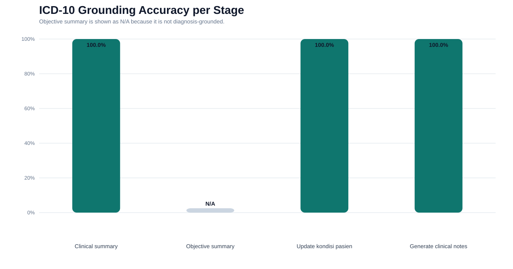
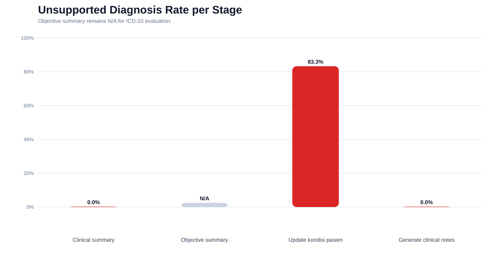
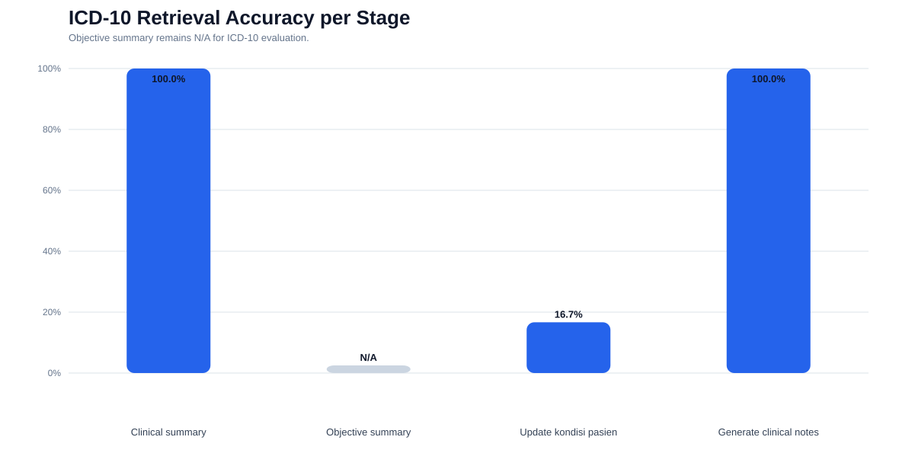
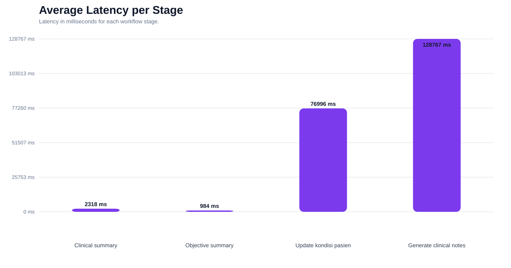

30 nurse workflows were executed in parallel. The evaluation compares generated ICD-10 codes against patient-level references extracted from SOAP notes, clinical notes, and database diagnoses.
evaluation/results/phase4_icd10_concurrent_results.jsonGrounding, unsupported diagnosis, retrieval accuracy, and latency by stage.




Main table for the paper. Objective summary is shown as N/A because it does not produce diagnosis/ICD-10 grounded output.
| Stage | Total Cases | Diagnosis-Related Outputs | Supported ICD-10 Outputs | Unsupported Diagnosis | ICD-10 Grounding Accuracy | Unsupported Diagnosis Rate | ICD-10 Retrieval Accuracy | Missing ICD-10 Rate | Wrong ICD-10 Rate | Avg. Latency | Triage Consistency Rate |
|---|---|---|---|---|---|---|---|---|---|---|---|
| Clinical summary | 30 | 30 | 30 | 0 | 100.0% | 0.0% | 100.0% | 0.0% | 0.0% | 2318 ms | 100.0% |
| Objective summary | 30 | N/A | N/A | N/A | N/A | N/A | N/A | N/A | N/A | 984 ms | N/A |
| Update kondisi pasien | 30 | 30 | 30 | 25 | 100.0% | 83.3% | 16.7% | 0.0% | 83.3% | 76996 ms | 93.3% |
| Generate clinical notes | 30 | 30 | 30 | 0 | 100.0% | 0.0% | 100.0% | 0.0% | 0.0% | 128767 ms | 93.3% |